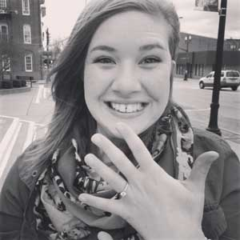
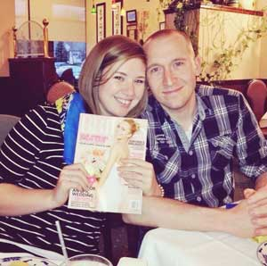

April 18, 2015
Oxford, Ohio
How We Met
Yadda yadda, Kappa Phi, pumpkin stuff :)
In October 2008, our first date was a Kappa Phi sisterhood to the Pumpkin Show. Chris had come along and he wooed me that night by singing to me on the Ferris wheel.
The Proposal, as told by Stephanie
On Thursday, Chris sent me a text message asking if we could go down to Columbus the following day, which was the first day of my spring break, to pick up a piece of furniture he had bought from his friend Nolan. Chris was being particularly sweet, and so I knew he was looking forward to a week together.
Friday morning, I got ready and drove from Indianapolis to Bowling Green. When I got there, Chris was ready to go. He had laid a sheet down to protect his leather sheets from the furniture and grabbed his checkbook. I was drowsy from my drive already, so he bought me a sweet tea. The whole drive, he wouldn't let me map out our drive because he said I'd just get crabby about how much longer we had to drive, seeing as I'd already been in the car all morning.
When we got closer to Nolan's house, Chris said we were a bit early so maybe we should go drive around. He pulled off on an exit and said, "Hey, this looks familiar. Have you been here before?" I didn't recognize the area until I saw a sign for Circleville.
As we were driving onto the picturesque streets of downtown Circleville, Chris suggested maybe we could go walk around for awhile to kill time. As we pulled onto another street, I saw a big billboard that said "WILL YOU MARRY ME," and my heart started to race! As we pulled a few feet forward, though, I saw the rest of the billboard which actually read, "WILL YOU MARRY ME LISA." I sighed, trying to bring myself back down to reality.
Chris parked the car and we got out. We walked just a couple feet, and he asked if I knew where I was now. He said we were standing in the same spot the Ferris wheel had been located on that first special night together. We wrapped our arms around each other's necks and he told me how much he loved me. At some point, he knelt down on one knee, and asked me to marry him. I had to ask him later if he even knelt because the whole thing was such a blur!
I wanted to walk around longer and soak in the moment, but Chris insisted we get right back in the car and head home... little did I know there was a second surprise! We decided to eat dinner at Panda House, the restaurant I worked at all through high school and college. When we pulled up to the restaurant, I saw my parents, his parents, and his brother and sister-in-law waiting to celebrate with us!